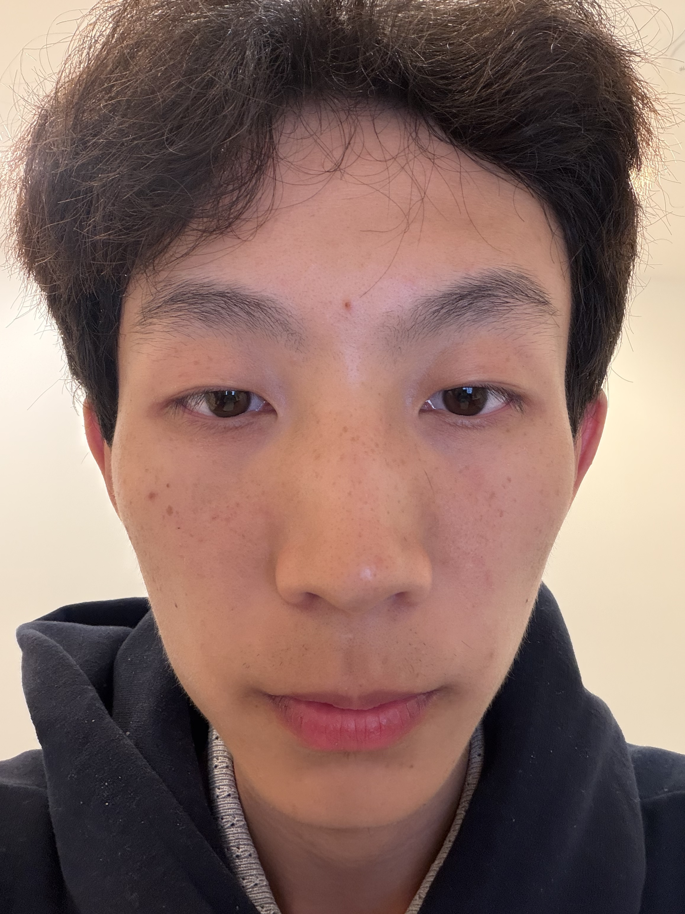
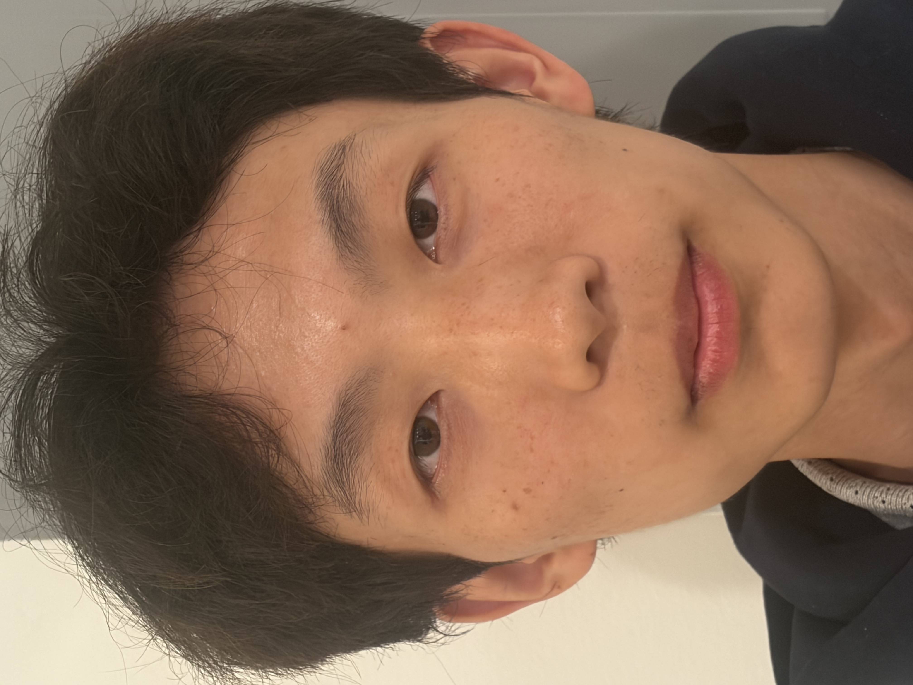
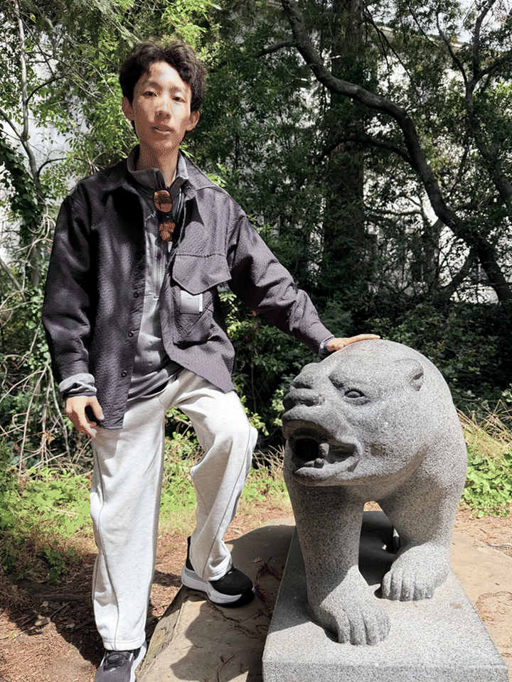

The Wrong Way vs. The Right Way
First, I photographed the same subject from two different distances. For the first image, the camera was placed close to the subject. For the second image, I moved farther away and zoomed in so that the face remained approximately the same size in the frame.

Close-Up Portrait
The camera is positioned close to the subject, producing stronger perspective distortion.

Step Back + Zoom In
The camera is moved farther away while zoom is used to maintain approximately the same framing.
Observation
In the close-up image, facial features that are closer to the camera appear relatively larger. For example, the nose may appear more prominent compared with the ears or sides of the face. When the camera moves farther away, the depth differences across the face become smaller relative to the total camera distance. Zooming in restores the size of the face without recreating the same perspective distortion.
Perspective Compression
Next, I repeated a similar experiment using an architectural scene. I first photographed the scene from farther away using zoom. I then walked closer to the scene and reduced the zoom while attempting to keep the main subject approximately the same size in the image.
Telephoto View
Taken from farther away using greater zoom.
Walked-Up View
Taken after physically moving closer to the scene and using less zoom.
Observation
In the image captured from farther away, objects at different depths appear more similar in size, creating a visually compressed scene. After moving closer, differences in depth become more noticeable because nearby objects change in apparent size more dramatically than distant objects. This demonstrates that perspective is determined mainly by camera position, while focal length changes the field of view and framing.
The Dolly Zoom
Finally, I created a dolly zoom by changing the camera position while simultaneously changing the focal length. As I moved farther from the subject, I zoomed in so that the subject remained approximately the same size in every frame.

The main subject remains approximately fixed in size while the background appears to expand or compress. The changing camera position changes perspective, while zoom compensates for the change in apparent subject size.
Why does this happen?
Moving the camera changes the center of projection and therefore changes the geometric relationship between the subject and the background. Changing focal length alone does not create this perspective change. Instead, zoom is used to maintain the subject's apparent size while the camera movement continuously changes the perspective. Combining the two produces the distinctive dolly zoom effect.
What I Learned
This project helped me understand the difference between perspective and zoom. Camera position determines perspective because it changes the relative geometry between objects and the center of projection. Focal length primarily controls field of view and magnification. By combining both ideas, the dolly zoom makes their distinction especially easy to observe.
← Back to Portfolio